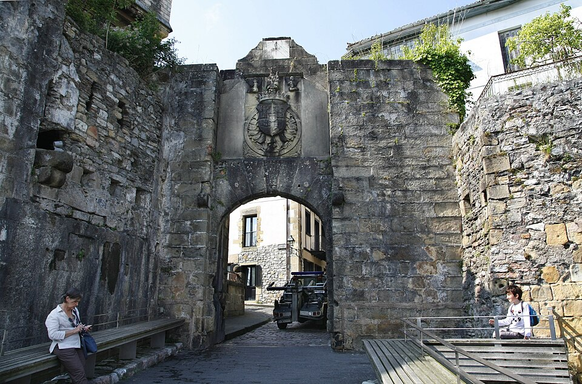

洪达里比亚｜城墙内外的巴斯克边境小镇
从中世纪城墙走到彩色渔民街区，看一座小镇怎样留住它的边境历史。
Hondarribia has been settled since the time of the Romans, and became a full-fledged village in the 13th century. As a town historically on the border, whether between Navarre and Castille, or between Spain and France, Hondarribia has enjoyed a tumultuous past. After citizens sought protection under the Castilian crown in 1203, Hondarribia became a point of conflict between Castille and the kingdom of Navarre, supported by France.
中文译文
洪达里比亚从罗马时代起就有人居住，13 世纪已发展成村落。它历来处在边界，先是纳瓦拉与卡斯蒂利亚之间，后来又在西班牙与法国之间，历史颇为动荡。1203 年，居民请求卡斯蒂利亚王室保护，小镇由此成为卡斯蒂利亚与受法国支持的纳瓦拉王国争夺的地点。
The town was repeatedly besieged by French and Navarran forces throughout the 1300s up until the Thirty Years' War in the mid 1600s, when Spain and France reconciled their borders under the Treaty of the Pyrenees. After the signing of this treaty (which fixed the French border to its current state), Hondarribia remained a border town, across the Bay from France.
中文译文
从 14 世纪到 17 世纪中叶，小镇多次遭法国和纳瓦拉军队围攻。后来西法通过《比利牛斯条约》划定边界。条约签订后，洪达里比亚仍是边境小镇，与法国隔湾相望。
There are two sections of town that are of special interest to the traveller:
中文译文
镇上有两个街区尤其值得游客一访：
The old city — With its medieval walls still intact, the historic part of town is home to the castle of Charles V, Zuloaga Palace, Casadevante Palace, the Gothic church of Nuestra Señora del Manzano, and Calle Pampinot, among other sights.
中文译文
老城的中世纪城墙仍完好，历史街区内有查理五世城堡、苏洛阿加宫、卡萨德万特宫、哥特式的苹果树圣母教堂，以及潘皮诺特街等景点。
La Marina — full of multicoloured houses and their resident fishermen, along San Pedro and Santiago Streets.
中文译文
拉马里纳：圣佩德罗街和圣地亚哥街一带有五颜六色的房屋，也住着当地渔民。
Hondarribia's beach, ports, lighthouse, the beach of Ondarraitz (on the other side of the bay), and the neighbouring hillsides are just as attractive, and make it clear why Hondarribia has enjoyed its position as a vacation destination for more than 100 years.
中文译文
镇上的沙滩、港口、灯塔，海湾对面的翁达赖茨沙滩和附近的山坡同样迷人。难怪洪达里比亚一百多年来一直是度假胜地。

重点表达
- a tumultuous past
- 一段动荡的历史。
- sought protection
- 寻求保护，sought 是 seek 的过去式。
- repeatedly besieged
- 多次被围攻。
- still intact
- 仍然完好无损。
- is home to
- 是……的所在地。
- across the Bay from
- 与……隔湾相望。
句子拆解
The old city — With its medieval walls still intact, the historic part of town is home to the castle of Charles V, Zuloaga Palace, Casadevante Palace, the Gothic church of Nuestra Señora del Manzano, and Calle Pampinot, among other sights.With + 名词短语 + 形容词交代城墙保存完好的背景；主句用 is home to 引出老城地标。